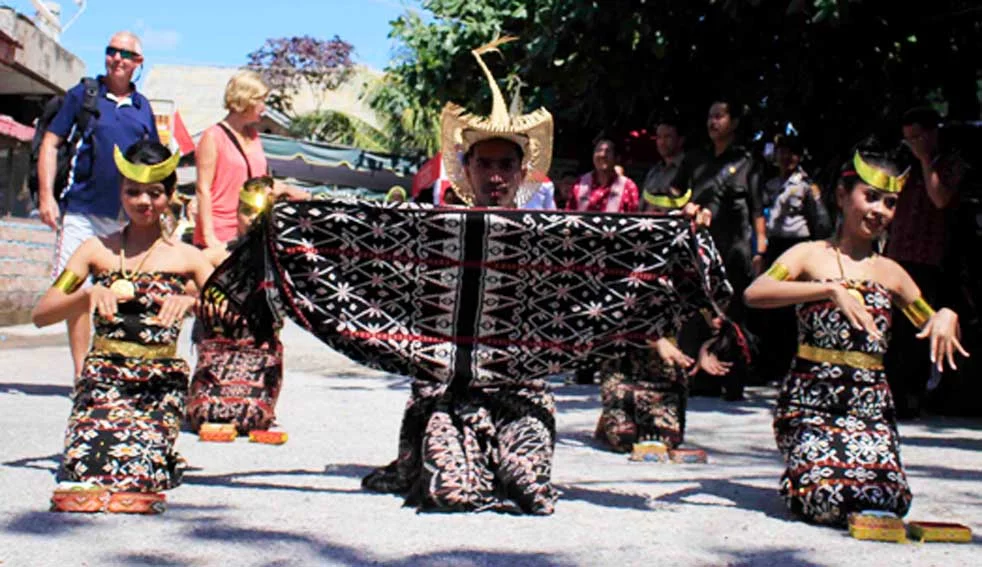

Sumatra
Nusa Tenggara
Maluku
Papua
Nusa Tenggara Timur
Nusa Tenggara Timur (disingkat NTT) adalah sebuah provinsi di Indonesia yang meliputi bagian timur Kepulauan Nusa Tenggara. Provinsi ini memiliki ibu kota di Kota Kupang dan memiliki 22 kabupaten/kota. Provinsi ini berada di Kepulauan Sunda Kecil. Tahun 2022, penduduk provinsi ini berjumlah 5.446.285 jiwa, dengan kepadatan 114 jiwa/km2.
Informasi Umum
| Nama Provinsi | Kode Wilayah | Kode Internasional | Singkatan Umum | Ibu Kota | Hari Jadi | Lambang |
|---|---|---|---|---|---|---|
| Nusa Tenggara Timur | 53 | ID-NT | NTT | Kupang | 20 Desember 1958 |
Budaya

Rumah Musalaki adalah contoh rumah adat yang banyak dijumpai di provinsi Nusa Tenggara Timur, Indonesia. Nama Musalaki sendiri diambil dari kata dalam bahasa Ende Lio yaitu mosa yang berarti ketua dan laki yang berarti adat, yang jika digabungkan artinya adalah "ketua adat" atau "kepala suku". Itulah mengapa rumah adat ini merupakan tempat tinggal khusus bagi kepala suku dari beberapa suku di provinsi Nusa Tenggara Timur.

Baju Amarasi merupakan pakaian adat dari suku DAwan yang tinggal di wilayah Nusa Tenggara Timur seperti Kupang, Timor, dan Belu. Baju Amarasi untuk pria terdiri dari kemeja bodo dan sarung tenun yang diikatkan pada pinggang. Umumnya para pria suku Dawan juga menggunakan beberapa aksesoris seperti kalung habas, gelang timor, kalung muti salak dan hiasan tara pada bagian kepala.
Sementara untuk para wanita, biasanya, dipakai dalam perayaan besar. Tak hanya itu saja, para wanita suku Dawan menambahkan beberapa macam aksesoris seperti tusuk konde yang berhiaskan emas, sepasang gelang berbentuk kepala ular dan sisir emas.
Tari tradisional, upacara Adat, serta kebudayaan di Indonesia sangat beragam dan memiliki keunikannya massing-masing, termasuk kebudayaan di Nusa Tenggara Timur.

Tari Perang adalah sebuah tarian yang ditarikan oleh seseorang, dua orang atau sekelompok orang dengan maksud menggambarkan semangat dan cara-cara berperang dengan mengunakan tangan kosong atau senjata tradisional.

Tari Cerana, adalah tarian tentang penyambutan tamu, yang melambangkan bagaimana menyambut tamu. Para penari membawa tempat sirih yang biasa disebut Cerana, kemudian diserahkan kepada para tamu sebagai tanda kehormatan dan ucapan selamat datang.
Bahasa Abui (Aboa) dituturkan di Desa Dede Kadu, Kecamatan Loli, Kabupaten Sumba Barat, Provinsi NTT. Menurut pengakuan penduduk, masyarakat di sebelah timur dan selatan Desa Dede Kadu merupakan penutur bahasa Kolon. Sementara itu, di sebelah barat dan utara Desa Dede Kadu merupakan penutur bahasa Abui. Berdasarkan penghitungan dialektometri, isolek Abui (Aboa) merupakan bahasa tersendiri dengan persentase perbedaan berkisar 81%—100% jika dibandingkan dengan bahasa-bahasa di sekitarnya, misalnya dengan bahasa Alor, Adang, Anakalang, dan Lamboya.

Salah satu upacara adat yang terkenal di NTT adalah upacara adat Reba. Upacara adat ini akan digelar untuk menyambut tahun baru yang akan dilakukan secara adat tradisional. Upacara adat ini digelar setiap tahunnya sebagai wujud rasa syukur.

Sundu adalah pedang kecil tradisional dari daerah Timor. Sundu memiliki pisau yang lurus memanjang dengan bagian ujung sempit dan bagian pangkal lebar. Bagian gagangnya terbuat dari tanduk kambing atau kuda yang dihiasi dengan rumbai-rumbai bulu kambing atau kuda. Sundu juga terkenal dengan keindahannya. Oleh karena itu, sundu juga dijadikan atribut dalam tarian Surik Laleok

Sasando adalah alat musik berdawai yang dimainkan dengan cara dipetik. Secara harfiah nama Sasando menurut asal katanya dalam bahasa Rote - sasandu - berarti alat yang bergetar atau berbunyi. Bagian utamanya berbentuk tabung panjang dari bambu, dengan bagian tengah melingkar dari atas ke bawah diberi penyangga di mana dawai-dawai atau senar yang direntangkan di tabung bambu dari atas ke bawah bertumpu. Penyangga ini memberi nada yang berbeda-beda di setiap petikan dawai, lalu tabung sasando diberi sebuah wadah yang terbuat dari anyaman daun lontar yang berfungsi sebagai tempat resonansi sasando.
Lagu Potong Bebek Angsa berasal dari Nusa Tenggara Timur. Lagu Potong Bebek Angsa merupakan lagu anak yang populer hingga kini. Lagu ini diciptakan oleh Pak Kasur atau yang memiliki nama asli Soerjono, seorang tokoh pendidikan Indonesia. Biasanya, lagu Potong Bebek Angsa digunakan untuk mengiringi permainan.
Kuliner

Sei atau se’i adalah kuliner daging asap khas Kupang, Nusa Tenggara Timur. Nama sei berasal dari bahasa Rote Ndao, yang artinya daging yang diiris tipis-tipis memanjang. Masakan Sei sudah ada sejak tahun 90-an. Pada awalnya, masakan sei menggunakan daging rusa, tetapi karena populasi rusa yang menurun dan rusa telah dilindungi oleh pemerintah Nusa Tenggara Timur, maka daging yang digunakan diganti menjadi daging sapi.
Daging sei sapi diiris tipis memanjang dan dilumuri garam serta bumbu ciri khas masing-masing penjualnya. Tidak hanya itu, daging sei sapi yang telah diiris ditutupi oleh daun kosambi dan diasap menggunakan arang kosambi. Teknik inilah yang menyebabkan aroma daging sei sapi sangat khas dan harum.
Destinasi Wisata

Danau ini dikenal dengan nama Danau Tiga Warna karena memiliki tiga warna yang berbeda, yaitu merah, biru, dan putih. Walaupun begitu, warna-warna tersebut selalu berubah-ubah seiring dengan perjalanan waktu. Kelimutu merupakan gabungan kata dari "keli" yang berarti gunung dan kata "mutu" yang berarti mendidih.
Danau Kelimutu di bagi menjadi tiga bagian yang sesuai dengan warna - warna yang ada di dalam danau. Danau berwarna biru atau "Tiwu Nuwa Muri Koo Fai" merupakan tempat berkumpulnya jiwa-jiwa muda-mudi yang telah meninggal. Danau yang berwarna merah atau "Tiwu Ata Polo" merupakan tempat berkumpulnya jiwa-jiwa orang yang selama hidupnya selalu melakukan kejahatan dan sekarang telah meninggal. Sedangkan danau berwarna putih atau "Tiwu Ata Mbupu" merupakan tempat berkumpulnya jiwa-jiwa orang tua yang telah meninggal.